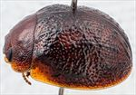
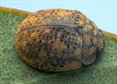
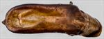
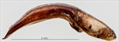
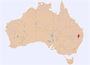

Click on images to enlarge
.jpg){kind=link}

Male, Inglewood, SE Queensland


Female, Inglewood, SE Queensland


Aedeagus, dorsal view (Inglewood, SE Queensland)


Aedeagus, lateral view (Inglewood, SE Queensland)


Distribution
Name
Trachymela abjecta (Blackburn)
Reference specimen
2021-111, Inglewood, SE Queensland.
Adult Description
Length: ♂ 5.4 mm (n=1), ♀ 5.1–6.2 mm (n=5).
Colouration:
- Head: frons and clypeus mid- to dark brown, labrum yellow-brown, mandibles mid-brown, usually with dark brown or black tips; antennomeres 1–3 light brown, 4–8 grading towards slightly or considerably darker brown, 9–11 concolorous with 8.
- Pronotum: disc dark brown, concolorous with rear of head, often with diffuse areas that are darker, anterior margin between eyes sometimes darker than disc, lateral margins tend to be slightly to considerably paler in shade.
- Scutellum: dark brown, concolorous with or slightly darker than adjacent area of pronotum.
- Elytra: surface is a mix of lighter brown and darker brown areas, the darker brown includes the small verrucae which are sometimes almost black and the surrounding interstices; lighter brown areas, of a shade similar to that of pronotum, are situated at antero-median depression, at anterior edge adjacent to scutellum, between humeral callus and lateral margin, and in posterior half of elytral marginal area; humeral callus of the darker brown shade.
- Venter & Legs: dark brown, legs sometimes fractionally darker, elytral epipleura brown, sometimes tending towards black around middle of marginal area.
- Cuticular Wax: light brown to orange-brown, with a somewhat patchy distribution, higher concentrations present in the paler brown areas described above.
Morphology:
- Shape: viewed laterally, curvature of upper outline most pronounced in anterior and posterior thirds, noticeably less so in central third, H/L: ♂ 0.40, ♀ 0.44–0.46, greatest height a little in front of elytral margin.
- Head: punctures relatively fine (pd ≈ 1.5–2× ef) and quite evenly and densely distributed. Antennae short (AL/BL: ♂ 38.3%, ♀ 32–35%), filiform.
- Pronotum: almost evenly curved transversely throughout, sometimes very slightly explanate near margins, shallow foveal depression present with a small, verruca-like elevation situated directly behind centre of eye, discal surface slightly uneven, nitid, puncturation variable, from clearly impressed and similar to or fractionally larger than those on head to noticeably larger than those on head, quite evenly to very slightly unevenly distributed and moderately dense (spacing ≈ 1.5–2.5 pd), punctures very coarse in foveal area and lateral margins. Front margins join much thinner lateral margins in a smoothly rounded right-angle, with lateral margin then approximately straight for a considerable distance before curving smoothly and gradually towards rear margin and thickening slightly, broadest quite close to posterolateral angle.
- Scutellum: variable, usually punctured, with punctures sometimes similar to those on adjacent area of pronotum, more often shallower, sometimes surface is unpunctured but rough in appearance.
- Elytra: surface smoothly curved throughout longitudinally, evenly or very slightly explanate transversely, antero-median depression shallow and quite small, marked by absence of verrucae, punctures closely spaced and relatively evenly distributed with interstices that are convex and give the surface a very granular appearance, punctures are larger and more clearly defined in marginal area, small round verrucae, some with small central punctures, are present and arranged such that longitudinal rows are not at all clearly defined, though VR5 sometimes has a series of evenly spaced verrucae in posterior half, short transverse wrinkles are usually present in posterior half of disc, being most pronounced just behind antero-median depression, elytral suture carinate in posterior third, posterior 20% of marginal area slightly concave, surface slightly discontinuous under humeral callus. Vertical extension of epipleura moderate (HCE/PW = 0.38–0.40).
- Venter: prosternal process almost parallel or narrowing anteriorly, open or closed anteriorly, at most a very sparse scatter of setae present along prosternal process and on mesoventrite, a single long seta present on anterior, median and posterior trochanters; front edge of metaventrite beveled, flat.
Male Genitalia (Aedeagus):
- Dimensions: short (LPE/BL = 31.6%, WPE = 0.263 × LPE).
- Dorsal view: shaft narrowing slightly from sulcus to rear of ostium, then widening fractionally to widest point around middle of ostium, from there sides converge towards apex in a smooth arc, dorsal surface with well-defined dorso-median and dorso-lateral channels, with dorso-median channel widest towards rear of ostium, dorsal ostial processes protruding to close to apex in the oval ostial depression; tip small and triangular.
- Lateral view: dorsal surface of shaft curved almost evenly over much of its length, ventral surface more uneven with a slight curvature near basal sulcus and relatively straight in central section, then converging evenly towards dorsal surface, tip deflexed.
Immature Stages
Unknown.
Similar species
- Ta113: this is a larger species (there is no overlap in the size distributions) whose geographic distribution and host preference overlaps that of Ta224 and is otherwise rather similar in almost all morphological and numerical characteristics. The aedeagus of Ta113 is less evenly curved over its dorsal surface than that of Ta224, having a quite distinct curvature between the basal and central sections.
Notes
- Taxonomy: Identification of this species as Trachymela abjecta (Blackburn) is by comparison with the female type specimen in the Natural History Museum, London (BMNH).
- Distribution & Abundance: Ta224 is found in southern Queensland and northern NSW.
- Host Associations: All specimens of Ta224 have been collected from the box species Eucalyptus woollsiana.
Copyright © 2026. All rights reserved.